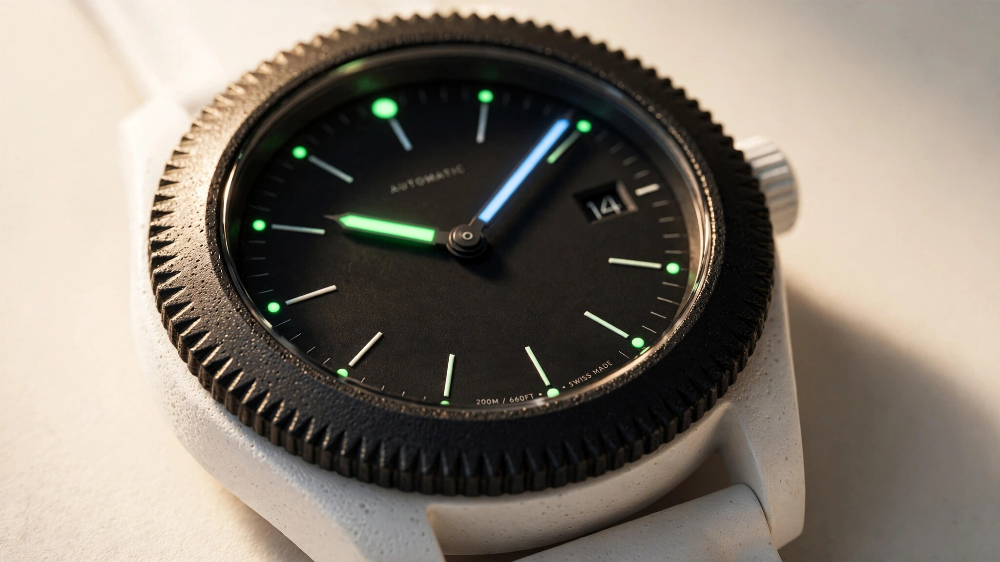

No Crown, No Compromise: The Engineering of IWC's First Spaceflight Watch
IWC's Pilot's Venturer Vertical Drive eliminates the crown entirely, replacing it with a patent-pending bezel-driven clutch system operable in pressurized gloves. White zirconium oxide ceramic, a proprietary titanium-ceramic hybrid, and a new five-day movement, all qualified for orbital spaceflight aboard the world's first commercial space station.

Every Watch That Has Gone to Space Was Built for Earth
When Buzz Aldrin wore an Omega Speedmaster on the lunar surface in 1969, he was wearing a racing chronograph. Omega designed the CK2998 for motorsport timing in 1957. NASA adopted it eight years later, not because it was built for space, but because it survived the qualification tests that destroyed every other candidate. Wally Schirra's personal Speedmaster flew on Mercury-Atlas 8 in 1962 simply because he liked the watch and strapped it on before launch. For sixty years, spaceflight horology has relied on this pattern: take a capable terrestrial tool watch, test it brutally, and if it survives, call it flight-qualified.
IWC Schaffhausen has its own spaceflight record. Modified Pilot's Watches flew aboard Inspiration4 in 2021 and Polaris Dawn in 2024. Both were aviation instruments adapted for a different environment. At Watches and Wonders Geneva in April 2026, IWC broke from that lineage entirely. Ref. IW328601, the Pilot's Venturer Vertical Drive, was designed from a blank sheet of paper with a single constraint: it must work for an astronaut performing extravehicular activity in pressurized gloves, orbiting Earth sixteen times per day, exposed to vacuum, radiation, and temperature swings spanning 250 degrees Celsius.
Why a Crown Cannot Survive Spaceflight
A standard watch crown is a shaft protruding from the case, typically 2 to 3 millimeters in diameter. Pulling it out, rotating it, and pushing it back requires the kind of fine motor control that a bare human hand performs without conscious thought. An astronaut wearing an EVA suit has none of that capability. Spacesuit gloves are pressurized to roughly 4.3 psi above ambient, inflating the fingers into stiff cylinders. Each finger joint requires measurable force to bend against the internal pressure. Grasping a 2mm crown and rotating it with controlled torque is physically impossible.
Previous space-flown watches sidestepped the problem by relying on automatic winding during intra-vehicular activity, when astronauts could occasionally adjust the crown without gloves. IWC's XPL advanced engineering division rejected this compromise. If the watch was to function as a genuine tool during EVA, every input had to work through gloved hands. That requirement eliminated the crown from the very first sketch.
Vertical Drive: A Clutch System in 44.3 Millimeters
Replacing the crown meant rethinking how rotational input reaches the movement. IWC's solution is a patent-pending mechanism called the Vertical Drive, which converts bezel rotation into the same functions a crown would normally provide: winding, time-setting, and GMT adjustment.
At the heart of the system sits a clutch mechanism that connects the rotating Ceratanium bezel to the winding stem through a vertical engagement axis. An oversized rocker switch on the left flank of the case toggles the clutch between three positions. In the first position, counterclockwise bezel rotation winds the mainspring directly, bypassing the automatic rotor entirely. In the second, bezel rotation sets the mission reference time displayed on the 24-hour outer scale. In the third, it advances the central hour hand in one-hour jumps, functioning as a flyer GMT to display home time or a second timezone.
Placing the rocker switch on the left side rather than the traditional crown position at 3 o'clock keeps the case profile snag-free. During EVA, any protrusion on the wrist can catch on handrails, tethers, or suit fabric. A flush left-side switch, recessed into the case contour, minimizes that risk while remaining large enough to actuate through pressurized glove material.
Manual winding through the bezel also addresses a practical limitation of automatic watches in microgravity. On Earth, wrist movement swings the oscillating rotor through gravity's pull, converting kinetic energy into mainspring tension. In orbit, that gravitational component disappears. Wrist-mounted accelerations during EVA tasks may still wind the rotor to some degree, but the energy budget is unpredictable. A 120-hour power reserve provides a five-day buffer. Beyond that, the bezel-wound manual option serves as a deterministic backup.
Caliber 32722: Five Days from the 32000 Platform
IWC built the movement around its existing 32000-series automatic platform, a proven base that already powers the Big Pilot's Watch and several Portugieser references. For the Venturer, IWC's movement engineers added a dedicated GMT module with a jumping hour hand, then routed the input path through the Vertical Drive clutch rather than a conventional crown stem.
| Parameter | Specification |
|---|---|
| Caliber | IWC-manufactured 32722 |
| Type | Automatic with manual bezel-wind option |
| Frequency | 28,800 vph (4 Hz) |
| Power reserve | 120 hours (5 days) |
| Jewels | 21 |
| Functions | Hours, minutes, seconds, date, 24-hour jumping GMT |
| Winding | Oscillating rotor or bezel-actuated Vertical Drive |
A five-day power reserve is not incidental engineering. IWC's Pellaton winding system, which uses ceramic pawl components for near-zero wear, has delivered 168-hour reserves in the Big Pilot's Watch and 60-hour reserves in the Portugieser Automatic. Fitting 120 hours into a 44.3mm case required balancing barrel torque, gear-train friction, and the additional load imposed by the GMT module. Enough runway to survive a long EVA rotation where winding opportunities may be sparse. Not so much that the mainspring's declining torque curve degrades accuracy before the reserve expires.
White Ceramic and Ceratanium: Two Materials, One Case
Ascending on a rocket subjects everything aboard to sustained accelerations of 3 to 4g, acoustic vibration levels exceeding 140 dB, and pyrotechnic shock during stage separation. Once in orbit, the hardware faces vacuum, particle radiation, and thermal cycling between +100°C in direct sunlight and -150°C in shadow. Each of these environments imposes material constraints.
IWC selected white zirconium oxide ceramic (ZrO₂) for the case body. Zirconium oxide is sintered from powder at approximately 1,500°C, producing a fully dense polycrystalline structure. In its yttria-stabilized tetragonal form, which watchmakers favor for its combination of hardness and fracture toughness, the material achieves a Vickers hardness between 1,200 and 1,400 HV. For comparison, 316L surgical stainless steel measures around 200 HV. Grade 5 titanium sits near 350 HV. Ceramic is six to seven times harder than the steel used in most luxury watch cases.
Hardness alone does not qualify a material for spaceflight. Ceramics are brittle. A steel case that absorbs an impact by deforming plastically will survive forces that would crack a ceramic one. Zirconium oxide mitigates this vulnerability through a crystallographic trick: when a crack begins to propagate, the stress field at the crack tip triggers a phase transformation from the metastable tetragonal crystal structure to the monoclinic phase. This transformation expands the grain volume by 3 to 5 percent, compressing the crack tip shut. Materials scientists call this transformation toughening, and it is the reason yttria-stabilized zirconia achieves fracture toughness values of 8 to 10 MPa·m1/2, roughly double that of alumina ceramics and approaching the lower end of titanium alloys.
For the bezel and caseback, IWC turned to Ceratanium, a material the company developed over five years and introduced in 2017. Ceratanium starts as a proprietary titanium alloy, smelted specifically for IWC. Components are machined and finished to final dimensions while still in their titanium state, exploiting the metal's excellent machinability. They are then fired in a kiln at high temperature, causing oxygen to diffuse into the surface lattice. This diffusion triggers a phase transformation that gives the outer layer ceramic-grade hardness and scratch resistance, while the core retains titanium's toughness and low density.
Ceratanium weighs roughly 30 percent less than stainless steel. It does not chip the way PVD coatings do, because the hardened surface is not a coating at all. It is a structural transformation of the base metal itself. And unlike monolithic ceramic, Ceratanium can be machined into fine geometries: pushers, buckles, crown guards, and in this case, the ridged grip texture of the Vertical Drive bezel. Producing those ridges in pure ceramic would be impractical. Sintering shrinks ceramic blanks by roughly 23 percent, making tight dimensional tolerances on small surface features extremely difficult to hold.
Designing for Sixteen Sunrises
At an orbital altitude of roughly 400 kilometers, a space station completes one revolution every 90 minutes. Astronauts witness sixteen sunrises and sixteen sunsets in a single 24-hour period. Without a reliable external day-night cycle, crews aboard the International Space Station and its commercial successors organize their work and sleep schedules around UTC (Coordinated Universal Time), displayed in 24-hour format.
IWC's dial reflects this operational reality. An outer scale runs from 00:00 to 24:00, tracked by a dedicated arrow-tipped hand filled with blue Super-LumiNova. Blue was chosen deliberately: it references the thin blue arc of Earth's atmosphere as seen from orbit, a visual that astronauts consistently describe as the most striking feature of the orbital perspective. Central hour and minute hands carry green Super-LumiNova on their ridged edges, providing dual-color contrast in darkness. A blue seconds hand sweeps an inner ring in the same hue. A date aperture at 3 o'clock is color-matched to the matte black dial, avoiding any reflective disruption.
Minimizing glare drove the entire dial architecture. In orbit, unfiltered sunlight is roughly 30 percent more intense than at sea level, and a helmet visor cannot always prevent specular reflections from reaching the wearer's eyes. IWC finished the dial in matte black with anti-reflective treatment, eliminating the polished surfaces that characterize most luxury watch dials. Every marker, every hand, every index was designed for instantaneous legibility rather than decorative effect.
Qualification at Vast
Spaceflight certification is not a marketing exercise. Hardware destined for crewed missions must prove, under controlled test conditions, that it can survive environments more severe than those it will actually encounter in flight. Vast, the company building Haven-1, the world's first planned commercial space station, conducted type testing at its Long Beach, California facility under the supervision of senior mission manager Kelton Temby.
Testing covered five domains: vibration profiles simulating launch and stage separation, pressure cycling between sea-level atmosphere and hard vacuum, thermal cycling across the full +100°C to -150°C envelope, material outgassing compatibility with the Haven-1 cabin environment, and directional force loading up to 10g. Launch loads on crew-rated vehicles typically peak between 3 and 4.5g. Testing to 10g provides a safety margin of more than two, consistent with standard aerospace hardware qualification philosophy.
After each test sequence, Vast's engineers verified mechanical integrity and timekeeping accuracy. Nothing cracked. Nothing delaminated. Nothing drifted outside acceptable accuracy bands. Ref. IW328601 became the first mechanical wristwatch to earn official spaceflight certification from a commercial space station operator, scheduled for crew wrists when Haven-1 launches in 2027.
IWC's Materials Heritage
Choosing ceramic and titanium for a spaceflight watch was not a departure from IWC's engineering history. It was a convergence. In 1980, IWC produced the Porsche Design Titanium Chronograph, the world's first full-production wristwatch with a titanium case and bracelet. Six years later, the IWC Da Vinci Perpetual Calendar (Ref. 3755) became the first wristwatch with a zirconium oxide ceramic case. Both materials were considered exotic and difficult to manufacture at the time. Both are now standard across the luxury watch industry.
Ceratanium, introduced in 2017 after a five-year development program led by IWC's head of materials development Lorenz Brunner, merged the two legacies into a single material. Brunner's brief was specific: create a material that could produce a fully black watch without relying on coatings that chip on impact. Ceratanium delivered that, and the material has since appeared in the Big Pilot's Watch, the Pilot's Watch Chronograph Top Gun line, and now the Venturer. In the Venturer, it appears in white ceramic rather than its signature matte black, marking the first IWC to pair white zirconium oxide with Ceratanium components in a single case.
Specifications
| Detail | Specification |
|---|---|
| Reference | IW328601 |
| Case material | White zirconium oxide ceramic |
| Bezel / caseback | Ceratanium (titanium-ceramic hybrid) |
| Diameter | 44.3 mm |
| Thickness | 16.7 mm |
| Crystal | Domed sapphire, anti-reflective |
| Water resistance | 10 bar (100 m) |
| Strap | White FKM fluorinated rubber, integrated lugs |
| Buckle | Ceratanium |
| Movement | Caliber 32722, automatic + bezel-wind |
| Power reserve | 120 hours |
| Frequency | 4 Hz (28,800 vph) |
| Functions | Hours, minutes, seconds, date, 24-hour jumping GMT |
| Lume | Green Super-LumiNova (hands), blue Super-LumiNova (24h hand, seconds) |
| Certification | Spaceflight-qualified by Vast for Haven-1 missions |
| Price | $28,200 |
What the Venturer Proves
Building a watch for space is not fundamentally about space. It is about identifying every assumption baked into conventional watchmaking and asking which ones are load-bearing. A crown exists because crowns have always existed. A 12-hour display exists because humans evolved under a single star. A steel case exists because steel was the strongest affordable alloy when wristwatches became standard military issue a century ago. Strip those assumptions away, and the design space expands considerably.
IWC's XPL division stripped them away and rebuilt a mechanical watch from requirements, not tradition. Gloved hands demanded a bezel clutch. Orbital timekeeping demanded a 24-hour display. Launch forces demanded ceramic. Microgravity demanded manual winding as a backup. Every feature in the Venturer Vertical Drive traces back to a specific engineering problem encountered in spaceflight. Nothing was carried over simply because previous watches had it.
Whether Haven-1 launches on schedule in 2027 is a question for aerospace, not horology. What IWC has already demonstrated is more durable: a rigorous method for designing a mechanical instrument from first principles, tested against quantified environmental loads, and certified by the organization that built the vehicle. That methodology will outlast any single mission.